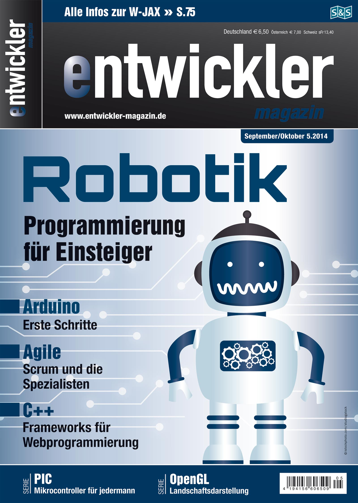
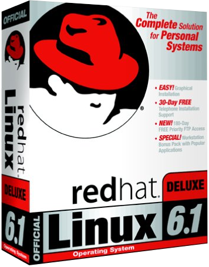
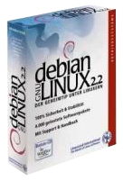

Timeline
Senior System Engineer - DevOps
WidasConcepts GmbH
1.10.2019 bis heute
Senior IT Consultant - Applied Technology Research
msg systems ag
1.1.2019 bis 30.9.2019
Aufgabenstellung:
Migration einer C++-Server-Application
Aufgabenbereich:
Proof of Concept und Troubleshooting
Technogie-Stack:
SuseLinux, C++, GDB, NetBeans, Make, Perl
1.6.2017 bis 30.9.2019
Aufgabenstellung:
Marktanalysen und Evaluierungen zum Thema Container-Orchestrierung
Aufgabenbereich:
Recherchen, Aufarbeitung und Präsentation
Technogie-Stack:
Container, Kubernetes, OpenShift
1.3.2017 bis 30.9.2019
Aufgabenstellung:
Provisionierung von Projektinfrastruktur auf Basis von Ansible
Aufgabenbereich:
Analyse, Konzeptionierung und Proof of Concept
Technogie-Stack:
Ansible, Container, Reverse Proxy
1.3.2017 bis 30.9.2019
Aufgabenstellung:
Erstellung einer generische Projekt-Infrastruktur auf Container-Basis
Aufgabenbereich:
Steuerung von Transformationsprozessen, Troubleshooting, Kundensupport
Technogie-Stack:
Docker-Container, Debinan-Linux, Bash-Scripts, KVM
1.1.2017 bis 30.9.2019
Thema:
Besuch der dreitägigen Schulung: Red Hat OpenShift Administration I (DO280)
24.06. bis 26.6.2018
Aufgabenstellung:
PKI (Public-Key-Infrastruktur) im IoT-Umfeld (Internet of Things) realisieren
Aufgabenbereich:
Consulting, Presales, Projektierung, Steuerung von Transformationsprozessen, Troubleshooting, Analyse und Überwachung von Standards und Prozessen, Kundenreports
Technogie-Stack:
VMWare, Kubernets/Docker, EJBCA, Glassfish/Payara, ActivMQ, Ansible, Puppet, Foreman, Graylog, MariaDB Galera Cluster
11.2017 bis 31.12.2018
Thema:
Besuch der Red Hat Container und Cloud-Native Roadshow 2017 in München
12.04.2018
IT System Engineer - agile operations
noris network AG, München
1.7.2017 bis 31.12.2018
DevOps Engineer
meteocontrol GmbH, Augsburg
15.8.2015 bis 30.6.2017
Entwickler
MELOS GmbH, Gessertshausen
1.2.2015 bis 30.6.2015
Umzug
Umzug von München nach Augsburg
1.1.2015
Aufgabenstellung:
Embedded Buildumgebung in Docker-Conteiner realisieren
Aufgabenbereich:
Analyse von C/C++-Code, Build-Tools und Build-Scripts; Dokumentation von Schnittstellen und Funktionsweisen. Anpassung von Build-Scrips. Erstellung von Dockerfils. Automatisierung von Docker-Builds. Ergebnispräsentation vor Team-Kollegen und Abteilungsleitern.
Technogie-Stack:
Atlassian Confluence, C/C++, Bash, Make, Ptxdist, Debian, Cross-Compiler, Artifactory, Docker, Embedded-Systeme, Jenkins-CI, GitLab-CI
Herpst 2015 bis Sommer 2016
Aufgabenstellung:
Interne Anwendungen Dockerisieren
Aufgabenbereich:
Interne Anwendungen in Docker-Container packen. Server zum hosten von Docker Conteiner aufbauen. Eirichten einer interne Docker-Registry mit Artifactory. Automatisierten Build- und Deployment-Prozess erstellen.
Technogie-Stack:
Ubuntu, CentOS, Artifactory, Docker (Swarm), Jenkins-CI, GitLab-CI, Nginx (Revers Proxy), NFS-Share, Ansible, Puppet, DNS, Systend, Keepalived (Floating IPs)
Sommer 2015 bis Sommer 2016
Aufgabenstellung:
Refactoring von Legacy Code
Aufgabenbereich:
Analyse von z.T. 20 Jahre altem C/C++-Code; Dokumentation von Schnittstellen und Funktionsweisen. Erstellung eines REST-Konzept. Implementierung eines WebClient mit MVC-Prinzip (mit Python/Bottle); Implementierung eines REST-Services mit Queue-Verwaltung und Nebenläufigkeit (in Python/Bottle). Implementierung eines REST-fähigen Backend-Prozesses in C++ (mit Curl-Lib). Konzeptdokumentation und Ergebnispräsentation
Technogie-Stack:
Atlassian Confluence, C/C++, Bash, Perl, Pyton, REST, WebInterface (MVC mit Bottle-Framework)
2.2015 bis 6.2015
Aufgabenstellung:
Einführung eines Konfigurationsmanagements für ein Kundenprojekt
Aufgabenbereich:
Einarbeitung und Evaluierun g von Salt Stack; Proof of Concept; Implementierung von Salt Stack; Dokumentation und Workshops durchgeführt;
Technogie-Stack:
Linux, Salt Stack, Git, Apache, MySQL, iptables, revers proxy, sftp
Sommer 2014 bis Januar 2015
Entwickler Magazin 5.14:
Webprogrammierung mit C++ - Welches Framework darf es sein?
URLs:
entwickler.de

04.2014
Aufgabenstellung:
Webfrontent für Telefonanlage zum Anzeigen der sich im Gespräch befindender Mitarbeiter, für das Foyer
Aufgabenbereich:
Einarbeitung in RubyOnRails. Analyse der Schnittstellen der Telefonanlage. Implementierung und Rollout. Reimplementierung mit Node.js unter Verwendung von Bootstrap (CSS-Lib). Implementierung einer Schnittstelle zu einem externen Webservice.
Technogie-Stack:
Linux, Raspberry PI, RubyOnRails, Node.js, Bootstrap, JavaScript, asterisk/starface-API
URLs:
github.comgithub.com
Anfang 2014 bis Sommer 2014
Aufgabenstellung:
Implementierung eines RPM-basierten vollautomatischen Rollout-Prozesses
Aufgabenbereich:
Erstellung des Konzeptes; Erstellung von RPM-Templates; Erstellung von automatischen Builds-Scripts; Einrichtung und Abstimmung von Server-Komponenten; Komunikation, Koordination und Abstimmung mit Kunden und Service-Partnern; Dokumentation; Tests und Abnahme.
Technogie-Stack:
Linux, Jenkins, YUM, RPM, Bash, PHP, Apache, MySQL, Mercurial
Sommer 2013 bis Sommer 2014
Aufgabenstellung:
Webanwendung zum Katalogisieren von Bibelstellen
Aufgabenbereich:
Ein-Mann-Projekt; Erstellung des Konzepts; Programmierung des Webfontend; Konzeption und Umsetzung des Backend; Konzept und Gestaltung mit CSS; Dokumentation.
Technogie-Stack:
Linux, C++, Tntnet, SQLite, HTML5, CSS3
1.2013 bis 7.201
Aufgabenstellung:
TNTNET ein Framework zur Erstellung von Webanwendungen mit C++
Aufgabenbereich:
Konzeptionierung, Implementierung und Test eines neuen MVC-Konzepts; Erstellung von Dokumentationen; Öffentlichkeitsarbeit; Verbesserung der Infrastruktur (u.a. Umstellung auf Git)
Technogie-Stack:
Linux, C++, Tntnet, SQLite, HTML5, CSS3, Markdown, SVN2Git, Pressearbeit, Social-Networking
Url:
tntnet.org
1.2013 bis 7.2014
Senior IT Consultant / Entwickler
ATIX AG, Unterschleißheim
1.8.2012 bis 1.2.2015
Aufgabenstellung:
Eine Deutsche Variante des Belief-O-Matic
Aufgabenbereich:
Ein-Mann-Projekt: Erstellung des Konzepts; Programmierung des Webfontend; Konzeption und Umsetzung des Backend; Konzept und Gestaltung mit CSS; Dokumentation.
Technogie-Stack:
Linux, Python, WebPy, SQLite, HTML, CSS
5.2012 bis 8.2012
Aufgabenstellung:
Beschwerdemanagement / Presales
Aufgabenbereich:
Beratung zu betrieblichen Abläufen; Unterstürzung bei der Suche von Lösungsansätzen; Fehleranalysen; Koordination von verschiedenen Dienstleistern und Abteilungen
Technogie-Stack:
Rechenzentrum, Beratung, Projektbetreuung, Beschwerdemanagement, Presales
Anfang 2012 bis Januar 2015
Aufgabenstellung:
Entwicklung eines leichtgewichtigen Webfrontend für Release-Prozess
Aufgabenbereich:
Erstellung des Konzept. Programmierung der Webfontend mit WebPy, HTML und CSS. Programmierung eines Session-Handlings mit ACL. Implementierung einer textbasierten Konfiguration. Backend-Programmierung mit SQLIte. Dokumentation, Tests und Abnahme
Technogie-Stack:
Linux, Python, WebPy, SQLite, HTML, CSS, ACL
Anfang 2012 (ca. zwei Manwochen)
Aufgabenstellung:
Modernisierung der Entwicklungsinfrastruktur
Aufgabenbereich:
QA; Make-File-Bau; RPM-Bau; QA-Virtualisirungs-Infrastruktur: Reorganisation und Betreuung; Rekonzeptionierung des Entwicklungs-Workflow: Einführung von Git, Migration bestehender Projekte von CVS zu Git, Überführung in öffentliche Entwicklungsprozesse, Einbindung neuer Tools, Schulung für neue Tools, Jenkins Continuous Integration (CI): Installation, Evaluierung, Einführung von Jenkins CI in den Workflow, Betreuung der Jenkins-Systeme,Pogrammierung umfangreicher vollautomatischer Testabläufe für CI (Bash), Python-Scripting zum Generieren von Reports mit Daten aus Bugzilla (in Text, HTML und DocBook); Spacewalk (Deployment-Server): Installation, Evaluierung, Mercurial (verteiltes Versionskontrollsystem), Einrichtung einer Infrastruktur, Unterstürzung der Benutzer bei der Einführung und Wartung der Systeme
Technogie-Stack:
Linux, Clusrterin, Enterprise, QA, Infrastruktur, Community, Entwicklung, Virtualisierung (KVM), Automatisierung, Scripting, Deployment
Anfang 2011 bis Sommer 2013
Aufgabenstellung:
Produktentwicklung: Dracut-Module (initramfs)
Aufgabenbereich:
Erstellung von Dokumentation: Online: Pflege, Erstellung und Übersetzuung von Fedora-Wiki-Artikel und Offline: mit LaTeX und robodoc, UML-Diagramme (mit dem Programm Dia); Anpassung der Software an neue Version von Fedora-Linux; Kommunikation mit (deutscher) Fedora-Comunity; Proof of Concept für objektorientierte Programmierung mit AWK; Rrstellung eines Dracut-Moduls speziell zum Debuggen; Refactorings
Technogie-Stack:
Linux, Dracut, AWK, dash, Fedora-Linux, boot-Prozess, Community
Url:
fedoraproject.org
github.com
de.wikibooks.org
Anfang 2011 bis Ende 2012
Ausbildung zum Fachinformatiker - Anwendungsentwicklung
30.7.2010 bis 31.7.2012
Aufgabenstellung:
Pflege, Überarbeitung und Ausbau firmeneigener Websites
Aufgabenbereich:
Koordination zwischen Entwicklung, Redaktion und Administration; Installation bzw. Rollout des Relaunch; Einspielen von Updates und Upgrades; Risikobewertung und Umsetzung von Sicherheitsmaßnahmen; Konzept und Umsetzung einer Backup-Strategie; Blog-Pflege (Themenfindung und Verfassung von Artikeln)
Technogie-Stack:
LLinux, Zope, Plone, Piwik, MySQL, PHP, Python, httpd, RPM- und Deb-Paket-Bau
Ende 2010 bis Sommer 2013
Beteiligung an der Organisation und Durchfürung des Software Freedom Day 2010 in München.
2010
Heilerziehungspfleger
1.7.2009 bis 30.7.2010
Heilerziehungspfleger
1.1.2009 bis 30.6.2009
Aufgabenstellung:
Wiederauflage eines Buches von 1825
Aufgabenbereich:
Projektplanung, Team-Führung; Zusammenstellung und Einrichtung der Tools und Infrastruktur; Schulung der Teammitglieder auf die Entwicklungs-Tools; Zeitplan- und Budget-Kontrolle; Texterkennung (OCR); Textsatz; Indexierung; Textstruktur; Versionskontrolle
Technogie-Stack:
LiveTex, KOMA-Script, Git-Versionskontrolle, Kate, Kile, Notepad++, OCR-ToolsLinux, Windows XP, Mediawiki.
Url:
books.google.com
github.com
6.2009 bis 12.2009
Auf dem Techtalk des Open Source Press Verlag. Thema: Git
20.4.2010
Aufgabenstellung:
BibleVCE, Weiterentwicklung bzw. Fork von BibleMemorizer
Aufgabenbereich:
Refactoring; Code von Qt3 auf Qt4 portiert; QT-GUI komplett neu geschrieben; Schnittstellendefinition; In- und Exportfunktionen zu anderen Programmen implementiert; Backend von XML-Files auf SQLite umgestellt; Dokumentation erstellt; Doxygen; UML-Diakgramm; Video-Tutorials
Technogie-Stack:
Linux, C++, Qt, qmake, SQLite, XML, Doxygen, Git
Url:
sourceforge.net
3.2010 bis 7.2010
Aufgabenstellung:
Alternatives GUI-Konzept für BibleTime (Proof of Concept)
Aufgabenbereich:
Alternative GUI für kleine Displays (Netbooks) mit Qt erstellt; Aufrufparameter erweitert; kleinere Patches; den Umstieg der Projektes von SVN zu Git angeregt
Technogie-Stack:
Linux, C++, Qt, qmake, SWord, Git, SVN
Url:
bibletime.info
3.2010 bis 7.2010
Heilerziehungspfleger
1.9.2008 bis 31.12.2008
Heilerziehungspfleger
9.6.2008 bis 31.8.2008
Umzug
1.6.2008
Aufgabenstellung:
Netzwerk-Installations-Server, der Programme installiert und in Baumkaskaden über Netzwerke weiterverteilt, Auftragsarbeit unter BSD-Lizenz
Aufgabenbereich:
Ein-Mann-Projekt (Entwurf, Machbarkeitsstudie, Umsetzung, Dokumentation, Abnahme)
Technogie-Stack:
.NET, C#, WinForms, Mono-Projekt, Tcp/IP, XML Serialisierung, Sicherheitskonzepte, differenzierte Logging-Modi, MD5-Authentifizierung
4.2008 bis 6.2008
Praktikum
1.10.2007 bis 31.12.2007
Praktikum
17.4.2007 bis 31.7.2007
Umzug
Sommer 2006
Aufgabenstellung:
ARTIKEL 23 CRM, ein Programm für kleine Büros und Homeoffices mit Schwerpunkt auf Verwaltung von Personenprofilen, geeignet für private Arbeitsvermittler und Arbeitslosen-Initativen, sowie für Fundraising und Wohnungssuche mit Funktionen für Teamarbeit und Dokumentenverwaltung, mit Segelsimulation als rundenbasiertes Netzwerkspiel (Gimmick), mit Nutzung geometrischer Datentypen von PostgreSQL.
Aufgabenbereich:
Projektplanung; Schnittstellendefinition; Entwurf, Datenmodell; Team-Führung; Event- und Messeplanung + Durchführung; Release- und Qualitätsmanagement; Datenbank-Normalisierung; Datenbank-Refactoring; Refactoring; Debugging; Support; Beta-Test; Usability und GUI-Programmierung; Datenbank-Programmierung; Dokumentation
Technogie-Stack:
sourceforge.net, SVN, .NET, C#, PostgreSQL, XML, XML-Serialisierung, Lokalisierung, HTML, WinForms, Linux, Windows, Make, NSIS, LaTeX, Mono-Projekt
URL:
sourceforge.net
8.2006 bis 12.201
Heilerziehungspfleger
10.6.2005 bis 12.7.2005
Umzug
Sommer 2005
Umzug
12.2004
Sabbatjahr
31.7.2004 bis 10.6.2005
Heilerziehungspfleger
1.8.2003 bis 31.7.2004
Heilerziehungspfleger
1.3.2003 bis 31.7.2003
Praktikum
7.5.2001 bis 17.7.2001
Praktikum
5.9.2000 bis 23.11.2000
Ausbildung zu Heilerziehungspfleger
10.2.2000 bis 1.3.2003
Beginn mit der Verwendung von Linux durch den Umstieg von Windows 98 auf Linux RedHat 6.1 bzw Debian 2.2 (Linuxland)

Anfang 2000
Gemeinnützige-Arbeit
8.5.1999 bis 10.2.2000
Hauskrankenpflegehelfer
6.4.1999 bis 7.5.1999
Hauskrankenpflegehelfer
9.9.1998 bis 30.3.1999
Gemeinnützige-Arbeit
25.5.1998 bis 8.9.1998
Umzug
3.1996
Umzug
7.1995
Freischaffender Künstler
2.7.1994 bis 24.5.1998
Schauwerbegestalter-Ausbildung
1.8.1991 bis 1.7.1994
Malergehilfe
7.5.1991 bis 31.7.1991
Schnellrestaurant (McDonalds)
18.2.1991 bis 2.5.1991
Kochausbildung (abgebrochen)
1.8.1990 bis 5.12.1990
Realschule
1989/90
Gesamtschule
1985 bis 1989
Grundschule
1978 bis 1985